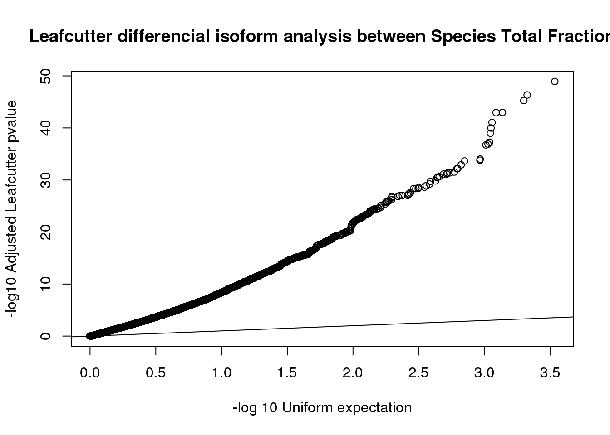
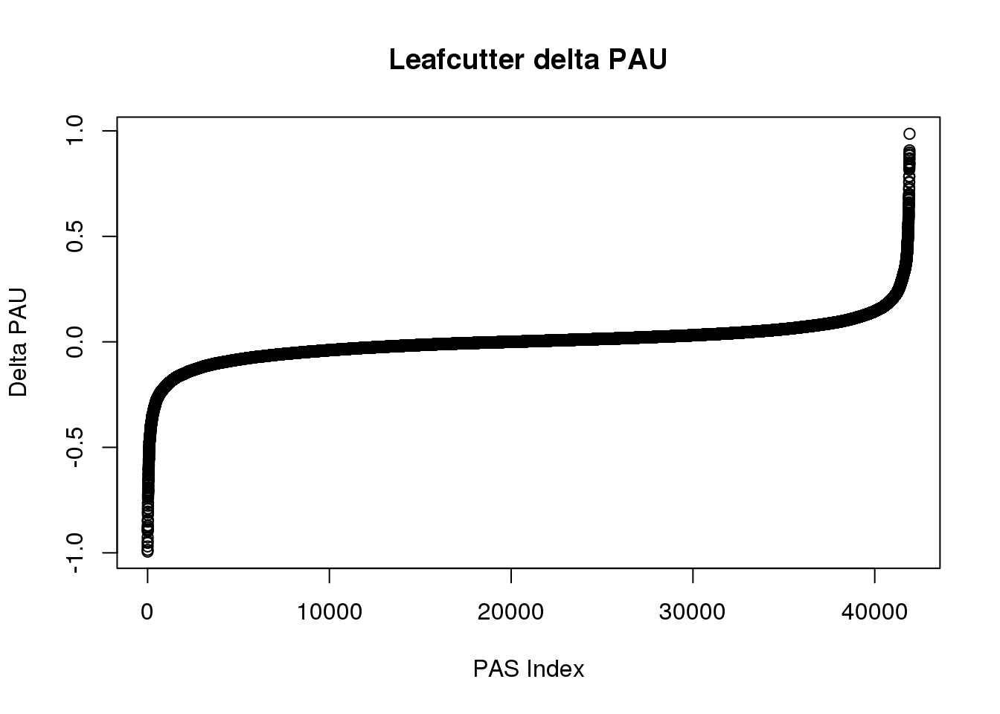
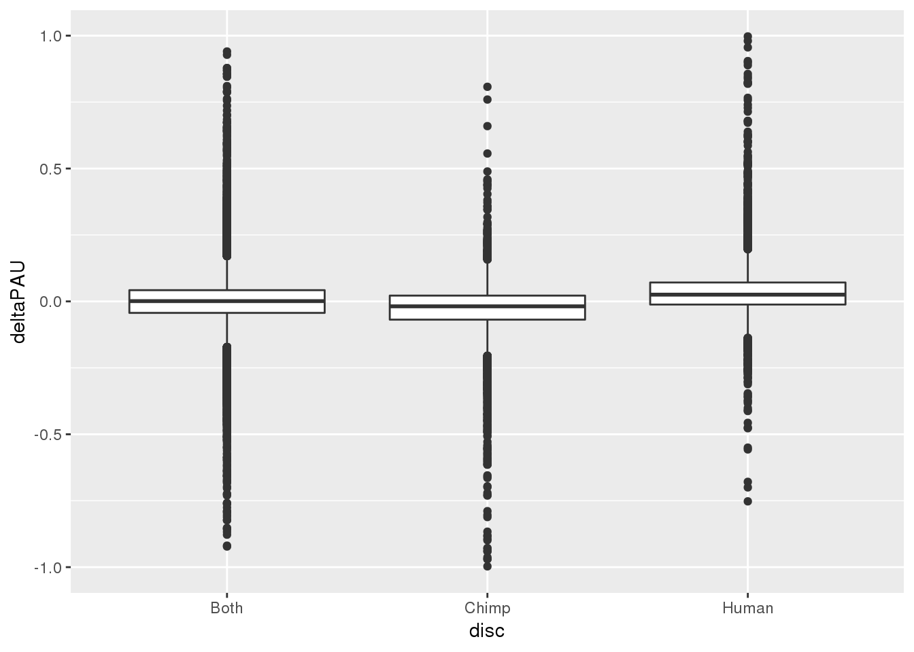
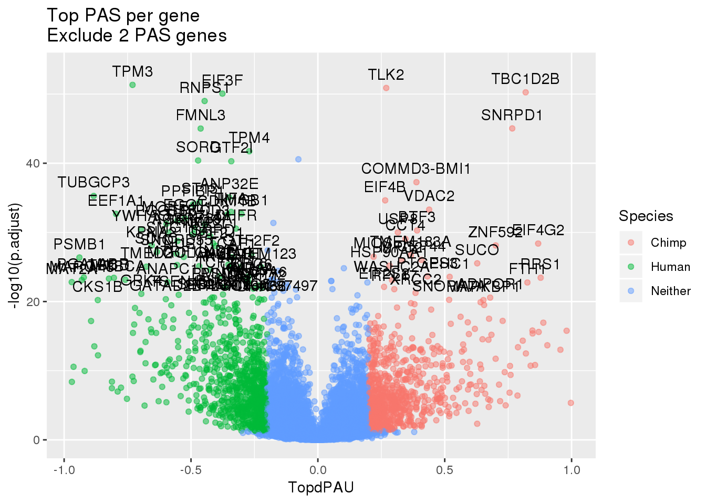
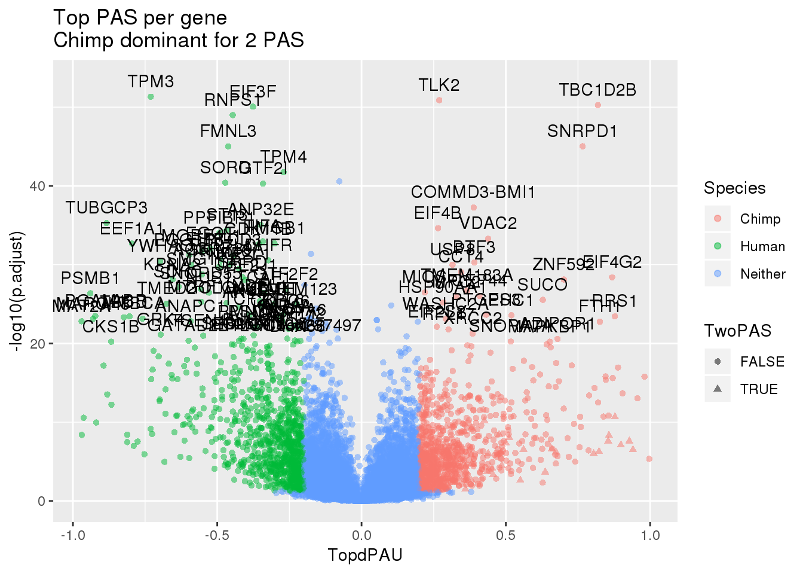

Last updated: 2019-12-30
Checks: 7 0
Knit directory: Comparative_APA/analysis/
This reproducible R Markdown analysis was created with workflowr (version 1.5.0). The Checks tab describes the reproducibility checks that were applied when the results were created. The Past versions tab lists the development history.
Great! Since the R Markdown file has been committed to the Git repository, you know the exact version of the code that produced these results.
Great job! The global environment was empty. Objects defined in the global environment can affect the analysis in your R Markdown file in unknown ways. For reproduciblity it’s best to always run the code in an empty environment.
The command set.seed(20190902) was run prior to running the code in the R Markdown file. Setting a seed ensures that any results that rely on randomness, e.g. subsampling or permutations, are reproducible.
Great job! Recording the operating system, R version, and package versions is critical for reproducibility.
Nice! There were no cached chunks for this analysis, so you can be confident that you successfully produced the results during this run.
Great job! Using relative paths to the files within your workflowr project makes it easier to run your code on other machines.
Great! You are using Git for version control. Tracking code development and connecting the code version to the results is critical for reproducibility. The version displayed above was the version of the Git repository at the time these results were generated.
Note that you need to be careful to ensure that all relevant files for the analysis have been committed to Git prior to generating the results (you can use wflow_publish or wflow_git_commit). workflowr only checks the R Markdown file, but you know if there are other scripts or data files that it depends on. Below is the status of the Git repository when the results were generated:
Ignored files:
Ignored: .DS_Store
Ignored: .Rhistory
Ignored: .Rproj.user/
Ignored: code/chimp_log/
Ignored: code/human_log/
Ignored: data/.DS_Store
Ignored: data/metadata_HCpanel.txt.sb-a5794dd2-i594qs/
Untracked files:
Untracked: ._.DS_Store
Untracked: Chimp/
Untracked: Human/
Untracked: analysis/CrossChimpThreePrime.Rmd
Untracked: analysis/assessReadQual.Rmd
Untracked: analysis/diffExpressionPantro6.Rmd
Untracked: code/._ClassifyLeafviz.sh
Untracked: code/._Config_chimp.yaml
Untracked: code/._Config_chimp_full.yaml
Untracked: code/._Config_human.yaml
Untracked: code/._ConvertJunc2Bed.sh
Untracked: code/._CountNucleotides.py
Untracked: code/._CrossMapChimpRNA.sh
Untracked: code/._CrossMapThreeprime.sh
Untracked: code/._DiffSplice.sh
Untracked: code/._DiffSplicePlots.sh
Untracked: code/._DiffSplicePlots_gencode.sh
Untracked: code/._DiffSplice_gencode.sh
Untracked: code/._DiffSplice_removebad.sh
Untracked: code/._GetMAPQscore.py
Untracked: code/._GetSecondaryMap.py
Untracked: code/._LiftFinalChimpJunc2Human.sh
Untracked: code/._LiftOrthoPAS2chimp.sh
Untracked: code/._MapBadSamples.sh
Untracked: code/._QuantMergedClusters.sh
Untracked: code/._ReverseLiftFilter.R
Untracked: code/._RunFixLeafCluster.sh
Untracked: code/._Snakefile
Untracked: code/._SnakefilePAS
Untracked: code/._SnakefilePASfilt
Untracked: code/._SortIndexBadSamples.sh
Untracked: code/._bed215upbed.py
Untracked: code/._bed2SAF_gen.py
Untracked: code/._buildIndecpantro5
Untracked: code/._buildIndecpantro5.sh
Untracked: code/._buildLeafviz.sh
Untracked: code/._buildLeafviz_leadAnno.sh
Untracked: code/._buildStarIndex.sh
Untracked: code/._chimpChromprder.sh
Untracked: code/._cleanbed2saf.py
Untracked: code/._cluster.json
Untracked: code/._cluster2bed.py
Untracked: code/._clusterLiftReverse.sh
Untracked: code/._clusterLiftReverse_removebad.sh
Untracked: code/._clusterLiftprimary.sh
Untracked: code/._clusterLiftprimary_removebad.sh
Untracked: code/._converBam2Junc.sh
Untracked: code/._converBam2Junc_removeBad.sh
Untracked: code/._extraSnakefiltpas
Untracked: code/._filter5percPAS.py
Untracked: code/._filterNumChroms.py
Untracked: code/._filterPASforMP.py
Untracked: code/._filterPostLift.py
Untracked: code/._fixExonFC.py
Untracked: code/._fixLeafCluster.py
Untracked: code/._fixLiftedJunc.py
Untracked: code/._fixUTRexonanno.py
Untracked: code/._formathg38Anno.py
Untracked: code/._formatpantro6Anno.py
Untracked: code/._getRNAseqMapStats.sh
Untracked: code/._hg19MapStats.sh
Untracked: code/._humanChromorder.sh
Untracked: code/._intersectLiftedPAS.sh
Untracked: code/._liftJunctionFiles.sh
Untracked: code/._liftPAS19to38.sh
Untracked: code/._liftedchimpJunc2human.sh
Untracked: code/._makeSamplyGroupsHuman_TvN.py
Untracked: code/._mapRNAseqhg19.sh
Untracked: code/._mapRNAseqhg19_newPipeline.sh
Untracked: code/._maphg19.sh
Untracked: code/._maphg19_subjunc.sh
Untracked: code/._mergeChimp3prime_inhg38.sh
Untracked: code/._mergedBam2BW.sh
Untracked: code/._nameClusters.py
Untracked: code/._numMultimap.py
Untracked: code/._overlapapaQTLPAS.sh
Untracked: code/._prepareCleanLiftedFC_5perc4LC.py
Untracked: code/._prepareLeafvizAnno.sh
Untracked: code/._preparePAS4lift.py
Untracked: code/._primaryLift.sh
Untracked: code/._processhg38exons.py
Untracked: code/._quantJunc.sh
Untracked: code/._quantJunc_TEST.sh
Untracked: code/._quantJunc_removeBad.sh
Untracked: code/._quantMerged_seperatly.sh
Untracked: code/._recLiftchim2human.sh
Untracked: code/._revLiftPAShg38to19.sh
Untracked: code/._reverseLift.sh
Untracked: code/._runCheckReverseLift.sh
Untracked: code/._runChimpDiffIso.sh
Untracked: code/._runCountNucleotides.sh
Untracked: code/._runFilterNumChroms.sh
Untracked: code/._runHumanDiffIso.sh
Untracked: code/._runNuclearDifffIso.sh
Untracked: code/._runTotalDiffIso.sh
Untracked: code/._run_chimpverifybam.sh
Untracked: code/._run_verifyBam.sh
Untracked: code/._snakemake.batch
Untracked: code/._snakemakePAS.batch
Untracked: code/._snakemakePASchimp.batch
Untracked: code/._snakemakePAShuman.batch
Untracked: code/._snakemake_chimp.batch
Untracked: code/._snakemake_human.batch
Untracked: code/._snakemakefiltPAS.batch
Untracked: code/._snakemakefiltPAS_chimp
Untracked: code/._snakemakefiltPAS_chimp.sh
Untracked: code/._snakemakefiltPAS_human.sh
Untracked: code/._submit-snakemake-chimp.sh
Untracked: code/._submit-snakemake-human.sh
Untracked: code/._submit-snakemakePAS-chimp.sh
Untracked: code/._submit-snakemakePAS-human.sh
Untracked: code/._submit-snakemakefiltPAS-chimp.sh
Untracked: code/._submit-snakemakefiltPAS-human.sh
Untracked: code/._subset_diffisopheno_Nuclear_HvC.py
Untracked: code/._subset_diffisopheno_Total_HvC.py
Untracked: code/._transcriptDTplotsNuclear.sh
Untracked: code/._verifyBam4973.sh
Untracked: code/._verifyBam4973inHuman.sh
Untracked: code/._wrap_chimpverifybam.sh
Untracked: code/._wrap_verifyBam.sh
Untracked: code/._writeMergecode.py
Untracked: code/.snakemake/
Untracked: code/ClassifyLeafviz.sh
Untracked: code/Config_chimp.yaml
Untracked: code/Config_chimp_full.yaml
Untracked: code/Config_human.yaml
Untracked: code/ConvertJunc2Bed.err
Untracked: code/ConvertJunc2Bed.out
Untracked: code/ConvertJunc2Bed.sh
Untracked: code/CountNucleotides.py
Untracked: code/CrossMapChimpRNA.sh
Untracked: code/CrossMapThreeprime.sh
Untracked: code/CrossmapChimp3prime.err
Untracked: code/CrossmapChimp3prime.out
Untracked: code/CrossmapChimpRNA.err
Untracked: code/CrossmapChimpRNA.out
Untracked: code/DiffSplice.err
Untracked: code/DiffSplice.out
Untracked: code/DiffSplice.sh
Untracked: code/DiffSplicePlots.err
Untracked: code/DiffSplicePlots.out
Untracked: code/DiffSplicePlots.sh
Untracked: code/DiffSplicePlots_gencode.sh
Untracked: code/DiffSplice_gencode.sh
Untracked: code/DiffSplice_removebad.err
Untracked: code/DiffSplice_removebad.out
Untracked: code/DiffSplice_removebad.sh
Untracked: code/FilterReverseLift.err
Untracked: code/FilterReverseLift.out
Untracked: code/GencodeDiffSplice.err
Untracked: code/GencodeDiffSplice.out
Untracked: code/GetMAPQscore.py
Untracked: code/GetSecondaryMap.py
Untracked: code/HchromOrder.err
Untracked: code/HchromOrder.out
Untracked: code/JunctionLift.err
Untracked: code/JunctionLift.out
Untracked: code/JunctionLiftFinalChimp.err
Untracked: code/JunctionLiftFinalChimp.out
Untracked: code/LiftClustersFirst.err
Untracked: code/LiftClustersFirst.out
Untracked: code/LiftClustersFirst_remove.err
Untracked: code/LiftClustersFirst_remove.out
Untracked: code/LiftClustersSecond.err
Untracked: code/LiftClustersSecond.out
Untracked: code/LiftClustersSecond_remove.err
Untracked: code/LiftClustersSecond_remove.out
Untracked: code/LiftFinalChimpJunc2Human.sh
Untracked: code/LiftOrthoPAS2chimp.sh
Untracked: code/LiftorthoPAS.err
Untracked: code/LiftorthoPASt.out
Untracked: code/Log.out
Untracked: code/MapBadSamples.err
Untracked: code/MapBadSamples.out
Untracked: code/MapBadSamples.sh
Untracked: code/MapStats.err
Untracked: code/MapStats.out
Untracked: code/MergeClusters.err
Untracked: code/MergeClusters.out
Untracked: code/MergeClusters.sh
Untracked: code/QuantMergeClusters
Untracked: code/QuantMergeClusters.err
Untracked: code/QuantMergeClusters.out
Untracked: code/QuantMergedClusters.sh
Untracked: code/Rev_liftoverPAShg19to38.err
Untracked: code/Rev_liftoverPAShg19to38.out
Untracked: code/ReverseLiftFilter.R
Untracked: code/RunFixCluster.err
Untracked: code/RunFixCluster.out
Untracked: code/RunFixLeafCluster.sh
Untracked: code/SAF215upbed_gen.py
Untracked: code/Snakefile
Untracked: code/SnakefilePAS
Untracked: code/SnakefilePASfilt
Untracked: code/SortIndexBadSamples.err
Untracked: code/SortIndexBadSamples.out
Untracked: code/SortIndexBadSamples.sh
Untracked: code/TotalTranscriptDTplot.err
Untracked: code/TotalTranscriptDTplot.out
Untracked: code/Upstream10Bases_general.py
Untracked: code/apaQTLsnake.err
Untracked: code/apaQTLsnake.out
Untracked: code/apaQTLsnakePAS.err
Untracked: code/apaQTLsnakePAS.out
Untracked: code/apaQTLsnakePAShuman.err
Untracked: code/bam2junc.err
Untracked: code/bam2junc.out
Untracked: code/bam2junc_remove.err
Untracked: code/bam2junc_remove.out
Untracked: code/bed215upbed.py
Untracked: code/bed2SAF_gen.py
Untracked: code/bed2saf.py
Untracked: code/bg_to_cov.py
Untracked: code/buildIndecpantro5
Untracked: code/buildIndecpantro5.sh
Untracked: code/buildLeafviz.err
Untracked: code/buildLeafviz.out
Untracked: code/buildLeafviz.sh
Untracked: code/buildLeafviz_leadAnno.sh
Untracked: code/buildLeafviz_leafanno.err
Untracked: code/buildLeafviz_leafanno.out
Untracked: code/buildStarIndex.sh
Untracked: code/callPeaksYL.py
Untracked: code/chimpChromprder.sh
Untracked: code/chooseAnno2Bed.py
Untracked: code/chooseAnno2SAF.py
Untracked: code/chromOrder.err
Untracked: code/chromOrder.out
Untracked: code/classifyLeafviz.err
Untracked: code/classifyLeafviz.out
Untracked: code/cleanbed2saf.py
Untracked: code/cluster.json
Untracked: code/cluster2bed.py
Untracked: code/clusterLiftReverse.sh
Untracked: code/clusterLiftReverse_removebad.sh
Untracked: code/clusterLiftprimary.sh
Untracked: code/clusterLiftprimary_removebad.sh
Untracked: code/clusterPAS.json
Untracked: code/clusterfiltPAS.json
Untracked: code/comands2Mege.sh
Untracked: code/converBam2Junc.sh
Untracked: code/converBam2Junc_removeBad.sh
Untracked: code/convertNumeric.py
Untracked: code/environment.yaml
Untracked: code/extraSnakefiltpas
Untracked: code/filter5perc.R
Untracked: code/filter5percPAS.py
Untracked: code/filter5percPheno.py
Untracked: code/filterBamforMP.pysam2_gen.py
Untracked: code/filterJuncChroms.err
Untracked: code/filterJuncChroms.out
Untracked: code/filterMissprimingInNuc10_gen.py
Untracked: code/filterNumChroms.py
Untracked: code/filterPASforMP.py
Untracked: code/filterPostLift.py
Untracked: code/filterSAFforMP_gen.py
Untracked: code/filterSortBedbyCleanedBed_gen.R
Untracked: code/filterpeaks.py
Untracked: code/fixExonFC.py
Untracked: code/fixFChead.py
Untracked: code/fixFChead_bothfrac.py
Untracked: code/fixLeafCluster.py
Untracked: code/fixLiftedJunc.py
Untracked: code/fixUTRexonanno.py
Untracked: code/formathg38Anno.py
Untracked: code/generateStarIndex.err
Untracked: code/generateStarIndex.out
Untracked: code/generateStarIndexHuman.err
Untracked: code/generateStarIndexHuman.out
Untracked: code/getRNAseqMapStats.sh
Untracked: code/hg19MapStats.err
Untracked: code/hg19MapStats.out
Untracked: code/hg19MapStats.sh
Untracked: code/humanChromorder.sh
Untracked: code/humanFiles
Untracked: code/intersectAnno.err
Untracked: code/intersectAnno.out
Untracked: code/intersectLiftedPAS.sh
Untracked: code/leafcutter_merge_regtools_redo.py
Untracked: code/liftJunctionFiles.sh
Untracked: code/liftPAS19to38.sh
Untracked: code/liftoverPAShg19to38.err
Untracked: code/liftoverPAShg19to38.out
Untracked: code/log/
Untracked: code/make5percPeakbed.py
Untracked: code/makeFileID.py
Untracked: code/makePheno.py
Untracked: code/makeSamplyGroupsChimp_TvN.py
Untracked: code/makeSamplyGroupsHuman_TvN.py
Untracked: code/mapRNAseqhg19.sh
Untracked: code/mapRNAseqhg19_newPipeline.sh
Untracked: code/maphg19.err
Untracked: code/maphg19.out
Untracked: code/maphg19.sh
Untracked: code/maphg19_new.err
Untracked: code/maphg19_new.out
Untracked: code/maphg19_sub.err
Untracked: code/maphg19_sub.out
Untracked: code/maphg19_subjunc.sh
Untracked: code/merge.err
Untracked: code/mergeChimp3prime_inhg38.sh
Untracked: code/merge_leafcutter_clusters_redo.py
Untracked: code/mergedBam2BW.sh
Untracked: code/mergedbam2bw.err
Untracked: code/mergedbam2bw.out
Untracked: code/nameClusters.py
Untracked: code/namePeaks.py
Untracked: code/nuclearTranscriptDTplot.err
Untracked: code/nuclearTranscriptDTplot.out
Untracked: code/numMultimap.py
Untracked: code/overlapPAS.err
Untracked: code/overlapPAS.out
Untracked: code/overlapapaQTLPAS.sh
Untracked: code/peak2PAS.py
Untracked: code/pheno2countonly.R
Untracked: code/prepareAnnoLeafviz.err
Untracked: code/prepareAnnoLeafviz.out
Untracked: code/prepareCleanLiftedFC_5perc4LC.py
Untracked: code/prepareLeafvizAnno.sh
Untracked: code/preparePAS4lift.py
Untracked: code/prepare_phenotype_table.py
Untracked: code/primaryLift.err
Untracked: code/primaryLift.out
Untracked: code/primaryLift.sh
Untracked: code/processhg38exons.py
Untracked: code/quantJunc.sh
Untracked: code/quantJunc_TEST.sh
Untracked: code/quantJunc_removeBad.sh
Untracked: code/quantLiftedPAS.err
Untracked: code/quantLiftedPAS.out
Untracked: code/quantLiftedPAS.sh
Untracked: code/quatJunc.err
Untracked: code/quatJunc.out
Untracked: code/recChimpback2Human.err
Untracked: code/recChimpback2Human.out
Untracked: code/recLiftchim2human.sh
Untracked: code/revLift.err
Untracked: code/revLift.out
Untracked: code/revLiftPAShg38to19.sh
Untracked: code/reverseLift.sh
Untracked: code/runCheckReverseLift.sh
Untracked: code/runChimpDiffIso.sh
Untracked: code/runCountNucleotides.err
Untracked: code/runCountNucleotides.out
Untracked: code/runCountNucleotides.sh
Untracked: code/runCountNucleotidesPantro6.err
Untracked: code/runCountNucleotidesPantro6.out
Untracked: code/runCountNucleotides_pantro6.sh
Untracked: code/runFilterNumChroms.sh
Untracked: code/runHumanDiffIso.sh
Untracked: code/runNuclearDifffIso.sh
Untracked: code/runTotalDiffIso.sh
Untracked: code/run_Chimpleafcutter_ds.err
Untracked: code/run_Chimpleafcutter_ds.out
Untracked: code/run_Chimpverifybam.err
Untracked: code/run_Chimpverifybam.out
Untracked: code/run_Humanleafcutter_ds.err
Untracked: code/run_Humanleafcutter_ds.out
Untracked: code/run_Nuclearleafcutter_ds.err
Untracked: code/run_Nuclearleafcutter_ds.out
Untracked: code/run_Totalleafcutter_ds.err
Untracked: code/run_Totalleafcutter_ds.out
Untracked: code/run_chimpverifybam.sh
Untracked: code/run_verifyBam.sh
Untracked: code/run_verifybam.err
Untracked: code/run_verifybam.out
Untracked: code/slurm-62824013.out
Untracked: code/slurm-62825841.out
Untracked: code/slurm-62826116.out
Untracked: code/slurm-64108209.out
Untracked: code/slurm-64108521.out
Untracked: code/slurm-64108557.out
Untracked: code/snakePASChimp.err
Untracked: code/snakePASChimp.out
Untracked: code/snakePAShuman.out
Untracked: code/snakemake.batch
Untracked: code/snakemakeChimp.err
Untracked: code/snakemakeChimp.out
Untracked: code/snakemakeHuman.err
Untracked: code/snakemakeHuman.out
Untracked: code/snakemakePAS.batch
Untracked: code/snakemakePASFiltChimp.err
Untracked: code/snakemakePASFiltChimp.out
Untracked: code/snakemakePASFiltHuman.err
Untracked: code/snakemakePASFiltHuman.out
Untracked: code/snakemakePASchimp.batch
Untracked: code/snakemakePAShuman.batch
Untracked: code/snakemake_chimp.batch
Untracked: code/snakemake_human.batch
Untracked: code/snakemakefiltPAS.batch
Untracked: code/snakemakefiltPAS_chimp.sh
Untracked: code/snakemakefiltPAS_human.sh
Untracked: code/submit-snakemake-chimp.sh
Untracked: code/submit-snakemake-human.sh
Untracked: code/submit-snakemakePAS-chimp.sh
Untracked: code/submit-snakemakePAS-human.sh
Untracked: code/submit-snakemakefiltPAS-chimp.sh
Untracked: code/submit-snakemakefiltPAS-human.sh
Untracked: code/subset_diffisopheno.py
Untracked: code/subset_diffisopheno_Chimp_tvN.py
Untracked: code/subset_diffisopheno_Huma_tvN.py
Untracked: code/subset_diffisopheno_Nuclear_HvC.py
Untracked: code/subset_diffisopheno_Total_HvC.py
Untracked: code/test
Untracked: code/transcriptDTplotsNuclear.sh
Untracked: code/transcriptDTplotsTotal.sh
Untracked: code/verifyBam4973.sh
Untracked: code/verifyBam4973inHuman.sh
Untracked: code/verifybam4973.err
Untracked: code/verifybam4973.out
Untracked: code/verifybam4973HumanMap.err
Untracked: code/verifybam4973HumanMap.out
Untracked: code/wrap_Chimpverifybam.err
Untracked: code/wrap_Chimpverifybam.out
Untracked: code/wrap_chimpverifybam.sh
Untracked: code/wrap_verifyBam.sh
Untracked: code/wrap_verifybam.err
Untracked: code/wrap_verifybam.out
Untracked: code/writeMergecode.py
Untracked: data/._.DS_Store
Untracked: data/._HC_filenames.txt
Untracked: data/._HC_filenames.txt.sb-4426323c-IKIs0S
Untracked: data/._HC_filenames.xlsx
Untracked: data/._MapPantro6_meta.txt
Untracked: data/._MapPantro6_meta.txt.sb-a5794dd2-Cskmlm
Untracked: data/._MapPantro6_meta.xlsx
Untracked: data/._OppositeSpeciesMap.txt
Untracked: data/._OppositeSpeciesMap.txt.sb-a5794dd2-mayWJf
Untracked: data/._OppositeSpeciesMap.xlsx
Untracked: data/._RNASEQ_metadata.txt
Untracked: data/._RNASEQ_metadata.txt.sb-4426323c-TE4ns3
Untracked: data/._RNASEQ_metadata.txt.sb-51f67ae1-HXp7Gq
Untracked: data/._RNASEQ_metadata_2Removed.txt
Untracked: data/._RNASEQ_metadata_2Removed.txt.sb-4426323c-a4lBwx
Untracked: data/._RNASEQ_metadata_2Removed.xlsx
Untracked: data/._RNASEQ_metadata_stranded.txt
Untracked: data/._RNASEQ_metadata_stranded.txt.sb-a5794dd2-D659m2
Untracked: data/._RNASEQ_metadata_stranded.txt.sb-a5794dd2-ImNMoY
Untracked: data/._RNASEQ_metadata_stranded.xlsx
Untracked: data/._metadata_HCpanel.txt
Untracked: data/._metadata_HCpanel.txt.sb-a3d92a2d-b9cYoF
Untracked: data/._metadata_HCpanel.txt.sb-a5794dd2-i594qs
Untracked: data/._metadata_HCpanel.txt.sb-f4823d1e-qihGek
Untracked: data/._metadata_HCpanel.xlsx
Untracked: data/._metadata_HCpanel_frompantro5.xlsx
Untracked: data/._~$RNASEQ_metadata.xlsx
Untracked: data/._~$metadata_HCpanel.xlsx
Untracked: data/._.xlsx
Untracked: data/CompapaQTLpas/
Untracked: data/DTmatrix/
Untracked: data/DiffExpression/
Untracked: data/DiffIso_Nuclear/
Untracked: data/DiffIso_Total/
Untracked: data/DiffSplice/
Untracked: data/DiffSplice_liftedJunc/
Untracked: data/DiffSplice_removeBad/
Untracked: data/EvalPantro5/
Untracked: data/HC_filenames.txt
Untracked: data/HC_filenames.xlsx
Untracked: data/MapPantro6_meta.txt
Untracked: data/MapPantro6_meta.xlsx
Untracked: data/MapStats/
Untracked: data/NuclearHvC/
Untracked: data/OppositeSpeciesMap.txt
Untracked: data/OppositeSpeciesMap.xlsx
Untracked: data/Peaks_5perc/
Untracked: data/Pheno_5perc/
Untracked: data/Pheno_5perc_nuclear/
Untracked: data/Pheno_5perc_total/
Untracked: data/RNASEQ_metadata.txt
Untracked: data/RNASEQ_metadata_2Removed.txt
Untracked: data/RNASEQ_metadata_2Removed.xlsx
Untracked: data/RNASEQ_metadata_stranded.txt
Untracked: data/RNASEQ_metadata_stranded.xlsx
Untracked: data/TotalHvC/
Untracked: data/TwoBadSampleAnalysis/
Untracked: data/chainFiles/
Untracked: data/cleanPeaks_anno/
Untracked: data/cleanPeaks_byspecies/
Untracked: data/cleanPeaks_lifted/
Untracked: data/leafviz/
Untracked: data/liftover_files/
Untracked: data/metadata_HCpanel.txt
Untracked: data/metadata_HCpanel.xlsx
Untracked: data/metadata_HCpanel_frompantro5.txt
Untracked: data/metadata_HCpanel_frompantro5.xlsx
Untracked: data/primaryLift/
Untracked: data/reverseLift/
Untracked: data/~$RNASEQ_metadata.xlsx
Untracked: data/~$metadata_HCpanel.xlsx
Untracked: data/.xlsx
Untracked: output/dtPlots/
Untracked: projectNotes.Rmd
Unstaged changes:
Modified: analysis/OppositeMap.Rmd
Modified: analysis/annotationInfo.Rmd
Modified: analysis/diffExpression.Rmd
Modified: analysis/investigatePantro5.Rmd
Modified: analysis/multiMap.Rmd
Note that any generated files, e.g. HTML, png, CSS, etc., are not included in this status report because it is ok for generated content to have uncommitted changes.
These are the previous versions of the R Markdown and HTML files. If you’ve configured a remote Git repository (see ?wflow_git_remote), click on the hyperlinks in the table below to view them.
| File | Version | Author | Date | Message |
|---|---|---|---|---|
| Rmd | 771d239 | brimittleman | 2019-12-30 | add write out |
| html | 2644747 | brimittleman | 2019-12-27 | Build site. |
| Rmd | 4c8973d | brimittleman | 2019-12-27 | add total human vs chimp |
library(reshape2)
library(tidyverse)── Attaching packages ────────────────────────────────────────────────────────────────────── tidyverse 1.2.1 ──✔ ggplot2 3.1.1 ✔ purrr 0.3.2
✔ tibble 2.1.1 ✔ dplyr 0.8.0.1
✔ tidyr 0.8.3 ✔ stringr 1.3.1
✔ readr 1.3.1 ✔ forcats 0.3.0 ── Conflicts ───────────────────────────────────────────────────────────────────────── tidyverse_conflicts() ──
✖ dplyr::filter() masks stats::filter()
✖ dplyr::lag() masks stats::lag()Compare nuclear fraction PAS between human and chimp. I need to merge the 5% phenotypes from the human and chimp. I need a fc file with the human and chimp total samples. I will make a group file with the identifier being human or chimp.
../Chimp/data/CleanLiftedPeaks4LC/ALLPAS_postLift_LocParsed_Chimp_fixed4LC.fc ../Human/data/CleanLiftedPeaks4LC/ALLPAS_postLift_LocParsed_Human_fixed4LC.fc
mkdir ../data/TotalHvChuman=read.table("../Human/data/CleanLiftedPeaks4LC/ALLPAS_postLift_LocParsed_Human_fixed4LC.fc", stringsAsFactors = F, header = T) %>% rownames_to_column(var="chrom")
chimp=read.table("../Chimp/data/CleanLiftedPeaks4LC/ALLPAS_postLift_LocParsed_Chimp_fixed4LC.fc", stringsAsFactors = F, header = T)%>% rownames_to_column(var="chrom")Allsamps=human %>% full_join(chimp,by="chrom")
AllTotal=Allsamps %>% dplyr::select(chrom,contains("_T")) %>% column_to_rownames(var="chrom")
write.table(AllTotal, "../data/TotalHvC/ALLPAS_postLift_LocParsed_HvC_Total_fixed4LC.fc",row.names = T, col.names = T, quote = F)I will make the id file here.
Inds=colnames(AllTotal)
Species=c(rep("Human",6), rep("Chimp", 6))
idFileDF=as.data.frame(cbind(Inds,Species))
write.table(idFileDF, "../data/TotalHvC/sample_goups.txt",row.names = F, col.names = F, quote = F)Split by chromosome.
mkdir ../data/DiffIso_Total/
python subset_diffisopheno_Total_HvC.py 1
python subset_diffisopheno_Total_HvC.py 2
python subset_diffisopheno_Total_HvC.py 3
python subset_diffisopheno_Total_HvC.py 4
python subset_diffisopheno_Total_HvC.py 5
python subset_diffisopheno_Total_HvC.py 6
python subset_diffisopheno_Total_HvC.py 7
python subset_diffisopheno_Total_HvC.py 8
python subset_diffisopheno_Total_HvC.py 9
python subset_diffisopheno_Total_HvC.py 10
python subset_diffisopheno_Total_HvC.py 11
python subset_diffisopheno_Total_HvC.py 12
python subset_diffisopheno_Total_HvC.py 13
python subset_diffisopheno_Total_HvC.py 14
python subset_diffisopheno_Total_HvC.py 16
python subset_diffisopheno_Total_HvC.py 18
python subset_diffisopheno_Total_HvC.py 19
python subset_diffisopheno_Total_HvC.py 20
python subset_diffisopheno_Total_HvC.py 21
python subset_diffisopheno_Total_HvC.py 22Run leafcutter:
sbatch runTotalDiffIso.shConcatinate results:
awk '{if(NR>1)print}' ../data/DiffIso_Total/TN_diff_isoform_chr*.txt_effect_sizes.txt > ../data/DiffIso_Total/TN_diff_isoform_allChrom.txt_effect_sizes.txt
awk '{if(NR>1)print}' ../data/DiffIso_Total/TN_diff_isoform_chr*.txt_cluster_significance.txt > ../data/DiffIso_Total/TN_diff_isoform_allChrom.txt_significance.txt
Significant clusters:
sig=read.table("../data/DiffIso_Total/TN_diff_isoform_allChrom.txt_significance.txt",sep="\t" ,col.names = c('status','loglr','df','p','cluster','p.adjust'),stringsAsFactors = F) %>% filter(status=="Success")
sig$p.adjust=as.numeric(as.character(sig$p.adjust))qqplot(-log10(runif(nrow(sig))), -log10(sig$p.adjust),ylab="-log10 Adjusted Leafcutter pvalue", xlab="-log 10 Uniform expectation", main="Leafcutter differencial isoform analysis between Species Total Fraction")
abline(0,1)
| Version | Author | Date |
|---|---|---|
| 2644747 | brimittleman | 2019-12-27 |
tested_genes=nrow(sig)
tested_genes[1] 9640sig_genes=sig %>% filter(p.adjust<.05)
number_sig_genes=nrow(sig_genes)
number_sig_genes[1] 6129Effect Sizes
effectsize=read.table("../data/DiffIso_Total/TN_diff_isoform_allChrom.txt_effect_sizes.txt", stringsAsFactors = F, col.names=c('intron', 'logef' ,'Human', 'Chimp','deltaPAU')) %>% filter(intron != "intron")
effectsize$deltaPAU=as.numeric(as.character(effectsize$deltaPAU))
effectsize$logef=as.numeric(as.character(effectsize$logef))plot(sort(effectsize$deltaPAU),main="Leafcutter delta PAU", ylab="Delta PAU", xlab="PAS Index")
| Version | Author | Date |
|---|---|---|
| 2644747 | brimittleman | 2019-12-27 |
Are those discovered used more in chimp those discovered in chimp?
PASinfo=read.table("../data/Peaks_5perc/Peaks_5perc_either_bothUsage_noUnchr.txt",header = T, stringsAsFactors = F)Join this with the effect sizes.
effectsize_sep=effectsize %>% separate(intron, into=c("chr", "start", "end", "gene"),sep=":")
effectsize_sep$start=as.integer(effectsize_sep$start)
effectsize_sep$end=as.integer(effectsize_sep$end)
effectsize_anno=effectsize_sep %>% inner_join(PASinfo, by=c("chr", "start", "end","gene"))ggplot(effectsize_anno, aes(x=disc, y=deltaPAU)) + geom_boxplot()
| Version | Author | Date |
|---|---|---|
| 2644747 | brimittleman | 2019-12-27 |
Volcano plot:
I need the effect sizes and the significance. I need to plot only the top PAS per cluster.
sig_geneP=sig %>% separate(cluster,into = c("chr", "gene"), sep=":") %>% dplyr::select(gene, p.adjust)
effectsizeTop=effectsize_sep %>% group_by(gene) %>% summarise(Min=min(deltaPAU), Max=max(deltaPAU)) %>% mutate(TopdPAU=ifelse(abs(Min)>Max, Min, Max))
#exclude when the max=min
effectsizeTopFilt=effectsizeTop %>% filter(abs(Min) != Max)
effectsize_wES=effectsizeTopFilt %>% inner_join(sig_geneP, by="gene") %>% mutate(Species=ifelse(TopdPAU > 0.2 & p.adjust<.05, "Chimp", ifelse(TopdPAU < -0.2 & p.adjust< .05, "Human", "Neither")))This is the significance for the gene.
ggplot(effectsize_wES,aes(x=TopdPAU, y=-log10(p.adjust))) +geom_point(aes(col=Species),alpha=.5) + labs(title="Top PAS per gene \nExclude 2 PAS genes")+ geom_text(data=subset(effectsize_wES, -log10(p.adjust) >20 & abs(TopdPAU)>.2 ), aes(x=TopdPAU,y=-log10(p.adjust) +2,label=gene))
| Version | Author | Date |
|---|---|---|
| 2644747 | brimittleman | 2019-12-27 |
Not the best way to visualize this because every PAS per gene is assigned the same pvalue.
Try this including the matching one. I will make 2 plots. One with human dominant, one with chimp dominant.
effectsizeTopHuman=effectsize_sep %>% group_by(gene) %>% summarise(Min=min(deltaPAU), Max=max(deltaPAU)) %>% mutate(TopdPAU=ifelse(abs(Min) > Max, Min, ifelse(abs(Min)==Max, Min, Max)),TwoPAS=ifelse(abs(Min)==Max, T, F))
effectsize_wES_human=effectsizeTopHuman %>% inner_join(sig_geneP, by="gene") %>% mutate(Species=ifelse(TopdPAU > 0.2 & p.adjust<.05, "Chimp", ifelse(TopdPAU < -0.2 & p.adjust< .05, "Human", "Neither")))
effectsizeTopChimp=effectsize_sep %>% group_by(gene) %>% summarise(Min=min(deltaPAU), Max=max(deltaPAU)) %>% mutate(TopdPAU=ifelse(abs(Max)>=abs(Min), Max, Min), TwoPAS=ifelse(abs(Min)==Max, T, F))
effectsize_wES_chimp=effectsizeTopChimp %>% inner_join(sig_geneP, by="gene") %>% mutate(Species=ifelse(TopdPAU > 0.2 & p.adjust<.05, "Chimp", ifelse(TopdPAU < -0.2 & p.adjust< .05, "Human", "Neither")))ggplot(effectsize_wES_human,aes(x=TopdPAU, y=-log10(p.adjust))) + geom_point(aes(col=Species, shape=TwoPAS),alpha=.5) + labs(title="Top PAS per gene \nHuman dominant for 2 PAS")+ geom_text(data=subset(effectsize_wES_human,-log10(p.adjust) >20 & abs(TopdPAU)>.2 ), aes(x=TopdPAU,y=-log10(p.adjust) +2,label=gene))
| Version | Author | Date |
|---|---|---|
| 2644747 | brimittleman | 2019-12-27 |
ggplot(effectsize_wES_chimp,aes(x=TopdPAU, y=-log10(p.adjust))) + geom_point(aes(col=Species, shape=TwoPAS),alpha=.5) + labs(title="Top PAS per gene \nChimp dominant for 2 PAS")+ geom_text(data=subset(effectsize_wES_chimp, -log10(p.adjust) >20 & abs(TopdPAU)>.2), aes(x=TopdPAU,y=-log10(p.adjust) +2,label=gene)) 
| Version | Author | Date |
|---|---|---|
| 2644747 | brimittleman | 2019-12-27 |
Write out the significant genes with >.2 difference.
effectsize_wES_chimpOnly= effectsize_wES %>% filter(Species=="Chimp")
effectsize_wES_HumanOnly= effectsize_wES %>% filter(Species=="Human")
write.table(effectsize_wES_chimpOnly,"../data/DiffIso_Total/SignifianceChimpPAS_2_Total.txt",col.names =T, row.names = F,quote = F)
write.table(effectsize_wES_HumanOnly,"../data/DiffIso_Total/SignifianceHumanPAS_2_Total.txt",col.names =T, row.names = F,quote = F)
sessionInfo()R version 3.5.1 (2018-07-02)
Platform: x86_64-pc-linux-gnu (64-bit)
Running under: Scientific Linux 7.4 (Nitrogen)
Matrix products: default
BLAS/LAPACK: /software/openblas-0.2.19-el7-x86_64/lib/libopenblas_haswellp-r0.2.19.so
locale:
[1] LC_CTYPE=en_US.UTF-8 LC_NUMERIC=C
[3] LC_TIME=en_US.UTF-8 LC_COLLATE=en_US.UTF-8
[5] LC_MONETARY=en_US.UTF-8 LC_MESSAGES=en_US.UTF-8
[7] LC_PAPER=en_US.UTF-8 LC_NAME=C
[9] LC_ADDRESS=C LC_TELEPHONE=C
[11] LC_MEASUREMENT=en_US.UTF-8 LC_IDENTIFICATION=C
attached base packages:
[1] stats graphics grDevices utils datasets methods base
other attached packages:
[1] forcats_0.3.0 stringr_1.3.1 dplyr_0.8.0.1 purrr_0.3.2
[5] readr_1.3.1 tidyr_0.8.3 tibble_2.1.1 ggplot2_3.1.1
[9] tidyverse_1.2.1 reshape2_1.4.3
loaded via a namespace (and not attached):
[1] Rcpp_1.0.2 cellranger_1.1.0 compiler_3.5.1 pillar_1.3.1
[5] later_0.7.5 git2r_0.26.1 plyr_1.8.4 workflowr_1.5.0
[9] tools_3.5.1 digest_0.6.18 lubridate_1.7.4 jsonlite_1.6
[13] evaluate_0.12 nlme_3.1-137 gtable_0.2.0 lattice_0.20-38
[17] pkgconfig_2.0.2 rlang_0.4.0 cli_1.1.0 rstudioapi_0.10
[21] yaml_2.2.0 haven_1.1.2 withr_2.1.2 xml2_1.2.0
[25] httr_1.3.1 knitr_1.20 hms_0.4.2 generics_0.0.2
[29] fs_1.3.1 rprojroot_1.3-2 grid_3.5.1 tidyselect_0.2.5
[33] glue_1.3.0 R6_2.3.0 readxl_1.1.0 rmarkdown_1.10
[37] modelr_0.1.2 magrittr_1.5 whisker_0.3-2 scales_1.0.0
[41] backports_1.1.2 promises_1.0.1 htmltools_0.3.6 rvest_0.3.2
[45] assertthat_0.2.0 colorspace_1.3-2 httpuv_1.4.5 labeling_0.3
[49] stringi_1.2.4 lazyeval_0.2.1 munsell_0.5.0 broom_0.5.1
[53] crayon_1.3.4